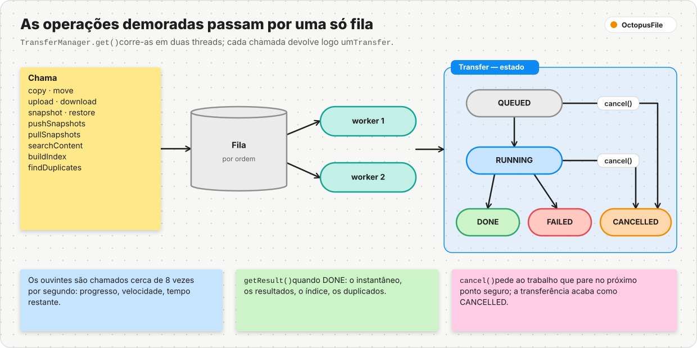
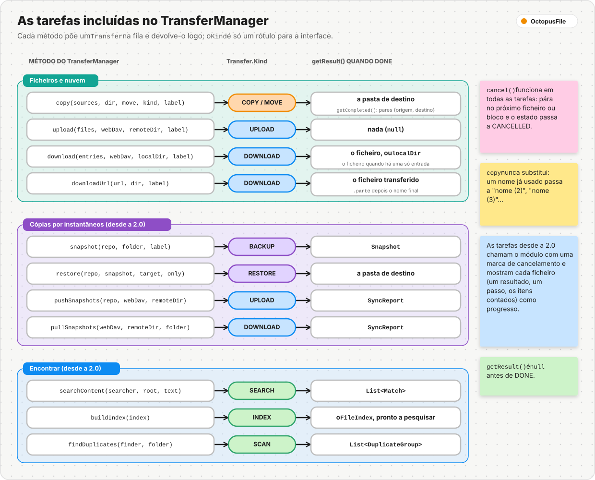
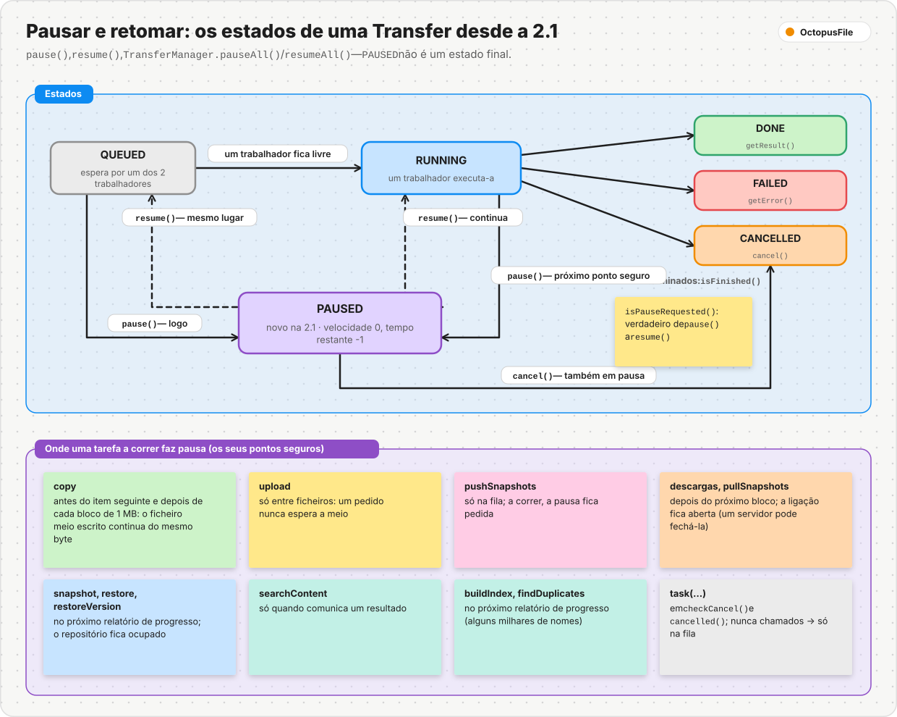
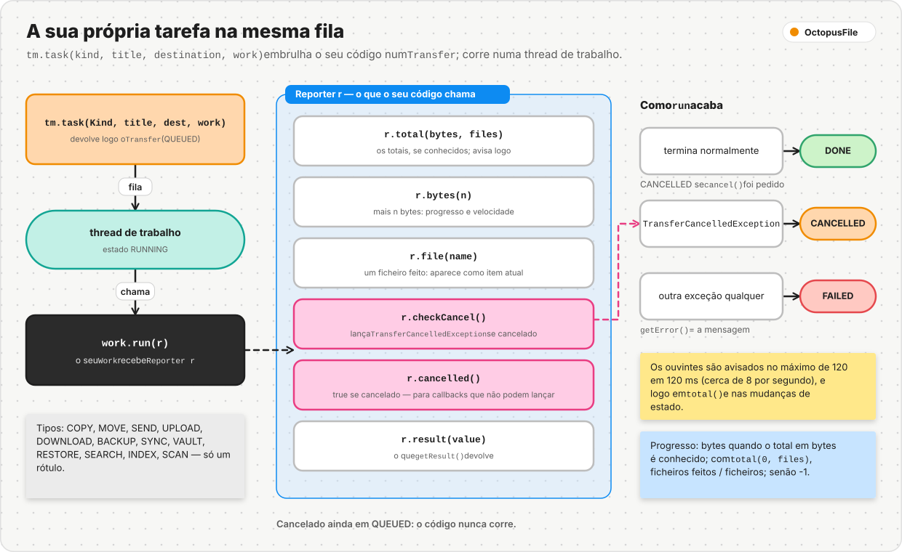

Transferências: progresso, velocidade, tempo restante, cancelar

TransferManager é uma fila (2 workers) para tudo o que demora. Cada tarefa é uma Transfer com os bytes e ficheiros concluídos, a velocidade (média móvel), o tempo restante estimado, o estado e um método cancel().
javaTransferManager tm = TransferManager.get();
tm.addListener(t -> {
if (t != null && !t.isFinished()) {
double f = t.getFraction(); // -1 while the total is still unknown
String done = f < 0 ? "..." : String.format("%.0f%%", f * 100);
System.out.printf("%s %s %,d B/s%n", t.getTitle(), done, (long) t.getSpeed());
}
});
Transfer t = tm.copy(List.of(src), dest, false, null, "Videos");
// t.cancel() stops it; when it ends: t.getState() == DONE, FAILED or CANCELLED
Os listeners são chamados a partir das threads dos workers, no máximo cerca de 8 vezes por segundo por transferência e a cada mudança de estado. Numa interface, passe a notificação para a thread da interface (Platform.runLater, SwingUtilities.invokeLater).
Tarefas incluídas#

| Método | Tarefa |
|---|---|
copy(sources, dir, move, kind, label) | cópia ou movimento local; nomes livres, nunca substitui; getCompleted() lista os pares {source, target} (para anular) |
upload(files, webDav, remoteDir, label) | envio para uma nuvem WebDAV |
download(entries, webDav, localDir, label) | descarga a partir do WebDAV |
downloadUrl(url, dir, label) | descarga da internet para um ficheiro .part, que muda de nome quando termina |
snapshot(repo, folder, label) | uma cópia por instantâneo; resultado: o Snapshot (desde a 2.0) |
restore(repo, snapshot, target, only) | repor um instantâneo numa pasta vazia (desde a 2.0) |
restoreVersion(repo, version, target) | repor uma versão de um ficheiro num ficheiro novo; resultado: o caminho do destino (desde a 2.1) |
pushSnapshots(repo, webDav, remoteDir) / pullSnapshots(webDav, remoteDir, folder) | copiar um repositório de instantâneos para uma nuvem e de volta; resultado: o SyncReport (desde a 2.0) |
searchContent(searcher, root, text) | pesquisa dentro dos ficheiros; resultado: a List<Match> (desde a 2.0) |
buildIndex(index) | construir um índice de nomes; resultado: o FileIndex (desde a 2.0) |
findDuplicates(finder, folder) | ficheiros duplicados; resultado: a List<DuplicateGroup> (desde a 2.0) |
getResult() dá o resultado quando o estado é DONE; cancel() para cada uma delas no ficheiro seguinte.
Pausar e retomar (desde a 2.1)#

javat.pause(); // na fila: PAUSED logo, não ocupa trabalhador; a correr: PAUSED no próximo ponto seguro
t.resume(); // volta a QUEUED (no mesmo lugar da fila) ou a RUNNING (de onde parou)
tm.pauseAll(); // todas as transferências da lista; tm.resumeAll() retoma-as todas
long active = t.getFinishedAt() - t.getStartedAt() - t.getPausedMillis();
Uma transferência em pausa na fila mantém o seu lugar, e a seguinte corre no lugar dela. Uma que está a correr faz pausa num ponto seguro (onde também verifica o cancelamento) e mantém o trabalhador e o que já fez. isPauseRequested() é verdadeiro de pause() até resume(); getState() só passa a PAUSED quando o trabalho espera de facto. Em pausa, a velocidade é 0, o tempo restante é -1 e o tempo em pausa não conta. cancel() também funciona numa transferência em pausa. Os ouvintes são avisados quando o estado passa a PAUSED e quando volta.
| Tarefa | Faz pausa enquanto corre |
|---|---|
copy | antes do item seguinte e depois de cada bloco de 1 MB; o ficheiro meio escrito continua do mesmo byte (mover dentro do mesmo volume é mudar o nome: não para a meio) |
upload, pushSnapshots | upload só entre ficheiros; pushSnapshots só enquanto está na fila (um pedido nunca espera a meio: a pausa fica pedida e o envio vai até ao fim) |
download, downloadUrl, pullSnapshots | depois do próximo bloco recebido; a ligação fica aberta, e um servidor que a feche durante uma pausa longa faz a transferência falhar |
snapshot, restore, restoreVersion | no próximo relatório de progresso; o repositório fica ocupado, por isso as outras operações nele esperam pela retoma ou pelo cancelamento |
searchContent | só quando comunica um resultado |
buildIndex, findDuplicates | no próximo relatório de progresso (de alguns milhares em alguns milhares de nomes; entre as fases de uma análise) |
task(...) | em checkCancel() e cancelled(); uma tarefa que nunca os chama só faz pausa enquanto está na fila |
Compatibilidade: PAUSED é uma constante nova de Transfer.State. Um switch sobre o estado sem default deve ganhar um caso PAUSED; isFinished() é falso enquanto está em pausa.
As suas próprias tarefas#

javaTransfer custom = tm.task(Transfer.Kind.COPY, "Thumbnails", "cache", r -> {
r.total(3, 3); // bytes, files (if known)
for (int i = 0; i < 3; i++) {
r.checkCancel(); // throws TransferCancelledException when cancelled
r.bytes(1);
r.file("thumb-" + i);
}
});
Tipos: COPY, MOVE, SEND, UPLOAD, DOWNLOAD, BACKUP, SYNC, VAULT e, desde a 2.0, RESTORE, SEARCH, INDEX, SCAN (apenas uma etiqueta para a interface).
DocExamplesTest